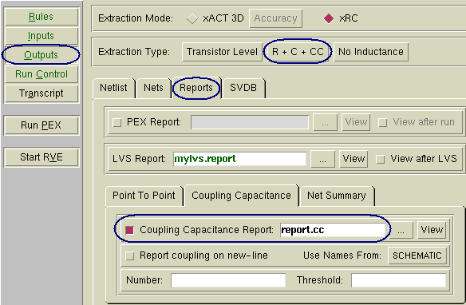

This procedure
includes only the minimum steps to generate the report. It can be
created for any run that includes CC parasitics.
Procedure
- Start the PEX interface in
Calibre Interactive.
- Load a runset or rulefile.
- In the Outputs pane, set the
extraction type to C + CC or R + C + CC.
- Under the Reports tab, enable the Coupling Capacitance Report.
Figure 1. Coupling Capacitance
Report Settings
- Provide a report name. (There
is no default.) If needed, set the other options:
SPLIT_NET causes the pair
of nets to be listed on two lines instead of one.
Number sets the maximum
number of nets to include in the report. Only the most tightly coupled
pairs are reported.
Threshold sets the capacitance
in farads below which not to not report.
- Set other controls as needed.
- Click Run PEX to produce the report
(and netlist).
Results
Check the Transcripts pane to verify
the run completed with no warnings about PEX Report Coupling Capacitance
or errors.
If there are no errors, the directory
contains the report file along with the netlist.